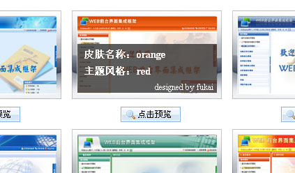

在使用某一种皮肤之前首先要选中一种导航结构页作为主页。例如要使用纵向抽屉式导航结构，对应的是nav_accordtion.html。
用浏览器打开nav_accordtion.html后，点击右上角的“皮肤管理”，可以看到该结构页面所有的皮肤。鼠标移到某一种皮肤缩略图上，可以看到上面写着如
“皮肤名称：orange 主题风格：red”的字样。
效果如下：

用编辑器打开nav_accordtion.html，可以看到有一句如下代码：
将上面代码中路径里的sky换成刚才的“皮肤名称”即orange，将themeColor="blue"中的blue换成刚才的“主题风格”即red。
这样就变成了想要的皮肤。至于框架引入的子页面无需做任何修改，每个子页面在初始时都会得到皮肤设置自动适应框架主页。
更详细说明请参看使用手册的“使用帮助>>框架皮肤机制说明”